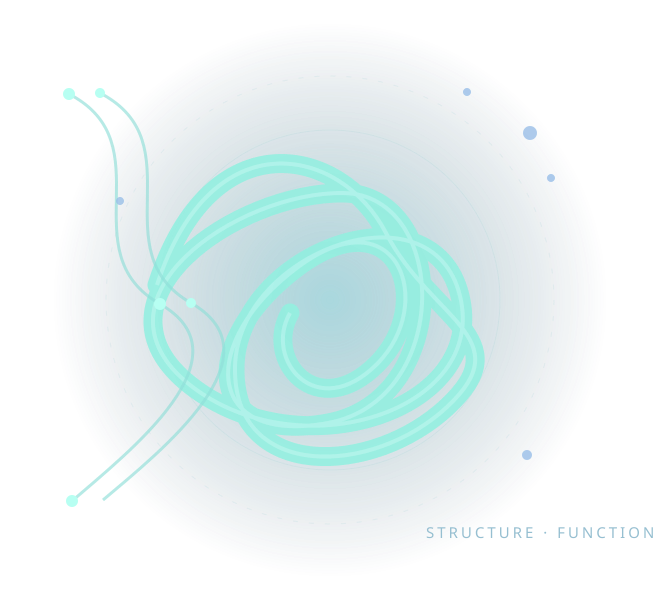

Decoding how proteins adapt to challenging biological environments.
Research in nucleases, protein function, and molecular evolution.

Research guided by fundamental biological questions.
I study how proteins maintain function in demanding biological environments, with interests spanning nuclease activity, structure–function relationships, and molecular evolution. This website highlights research directions, published work, and academic activities. Institutional affiliation and biographical details will be added after verification.

Research directions
Three connected themes organize the current academic profile.


A future independent research program may connect mechanistic biochemistry, comparative biology, and functional validation. This is a prospective direction, not a claim that a laboratory has already been established.
Selected publications
Only published or verifiably accepted work will appear here.
Talks & presentations
Conference presentations and invited talks, once the details are confirmed.
Academic curriculum vitae
Education, appointments, research experience, selected skills and academic service.
Let's connect.
For research discussions, academic collaboration and scientific exchange.
Please replace placeholder details before publishing this website publicly.